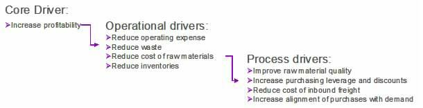
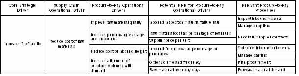

| Example: Measurement Framework Requirements |
 |
|
| Related Elements |
|---|
The development of the process measrement should start by identifying the core drivers of value for the business, i.e., the strategic performance goals of the enterprise. For example:
Each of the core drivers should then be decomposed into the operational drivers of value
that contribute to the core drivers. For example,
 The operational drivers can then be viewed in the context of a specific end-to-end process to identify specific process operational drivers. In the case of the Procure-to-Pay process on the supply chain side of the enterprise, the operational drivers impacting "reduce cost of raw materials" might include:
KPIs that apply toeach of the drivers should then be identified and applied to the relevant processes in the overall Procure-lto-Pay process m as shown in the table be low:  The specific targets for each of the process KPIs should then be established using the targets that the enterprise has set for the strategic drivers and the operational drivers for each major process area. For example, if the target is to improve enterprise profitability by 10% and cost of raw materials is 20% of the enterprise operational expenses, then a reduction in raw material costs of 10% would contribute 2% to the total enterprise goal. This 10% target could then be allocated over the individual processes based on their potential to contribute to the overall target for the Procure-to-Pay processes. The opportunity to reduce costs may be higher for some processes, e.g., "Negotiate Supplier Contracts," than it is for the other processes shown in the table, so the target reduction would be proportionally higher as well. Consideration must also be given to developing KPIs for hand-offs (white spaces) between functional boundaries or departments within functional boundaries to support downstream sub-process KPIs. In order for the downstream functional area department to meet the KPIs for sub-processes within their functional area or department, specific performance criteria may be require by the upstream functional area or department. Note that actual measured performance over time could indicate that 1) the wrong things are being measured (i.e., changes in KPI measurements do not impact the operational drivers) or 2) the targets for each process KPI need to be adjusted (i.e., targets are set too high or too low to achieve the objectives of the operational drivers). Changes to KPIs and targets are to be expected and should be planned for over the life of a process. Responding to changes in the business environment will almost certainly include a reassessment and redefinition of KPIs and targets. |
| © Copyright IBM Corp. 1987, 2012 All Rights Reserved Property of IBM These materials are intended only for use as part of an IBM engagement |